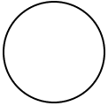
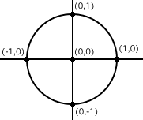
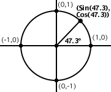
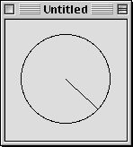
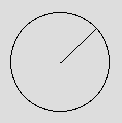

Using Trigonometry in REALbasic
By Dan Vanderkam
You probably know that the Sin, Cos and Tan functions in RB take in a number and give you another number. You may also know that they're related to trigonometry (or, as most people call it, trig). However, I've been surprised at how many people don't have a clue about how they're used. So, I've written this article to help show people how to use them, and why they're really, really useful.
OK, to start off, get out a piece of paper, and draw a nice large circle on it, like so:

Now that you have the circle, draw two lines through it, and label their intersection (0,0). Now, label the edges like this: The left edge of the circle is (-1,0), the right edge is (1,0), the top edge is (0,1), and the bottom edge is (0,-1). Your picture should look something like this:

As you may have noticed, we now have a cicle on a coordinate plane. Its radius is 1. This makes it quite easy to find the four points we have labeled (which are all at 90° intervals), but what if we want to get the coordinates of an inbetween angle, like 47.3? That would be rather difficult to make a computer do.Thankfully, this is exactly what Sin and Cos do. Our next step shows what the point at 47.3 degrees is:

So, the Sine of a degree is its X coordinate, and the Cosine of a degree is its Y coordinate. Pretty simple, huh? Of course, there are drawbacks. First of all, this only works for circles with a radius of 1, and on a computer screen, one pixel is not much. This is easy enough to fix though; just multiply the coordinates by the circle's radius.
Also, there's another drawback. The Sin and Cos functions (As well as all the other Trig functions in RB) don't use degrees. They use another system called Radians. Radians are usually a number times Pi. For example 360° and 2p radians are the exact same. 90° and 1/2 p radians are the same thing too.
Unfortunately, p isn't a very good number for a computer. It goes on endlessly, which would mean that your computer would need an infinite amount of RAM too. Not good. However, there is a simple way to convert. Try this code:
Dim Deg2Rad as Double
Deg2Rad=ATan(1)/45
MsgBox "180 degrees="+str(180*Deg2Rad)+" radians."
As you can see, multiplying a number by our special variable (Deg2Rad) converts it from degrees to radians. Why does multipying a number by ATan(1)/45 work? I have no clue, but it does, and that's what matters. So, armed with this knowledge, we can now make a program that draws a point at 47.3 degrees on a circle with a radius of 50.
First, make a window, and put a canvas in it. Make sure the canvas is at least 120x120. Double click the canvas to bring up the code editor, and type this in:
Sub Paint(g as graphics)
Dim Deg2Rad, X, Y as Double
Deg2Rad=ATan(1)/45
X=Sin(47.3*D)*50+60
Y=Cos(47.3*D)*50+60
g.DrawOval 10,10,100,100
g.DrawLine 60,60,X,Y
End Sub
Yes, that does deserve some explaining. The only two lines that should be new to you are these:
X=Sin(47.3*D)*50+60
Y=Cos(47.3*D)*50+60
We know that Sin returns the X coordinate of a degree. We also know that it uses radians. So, 47.3*D takes 47.3 degrees, and converts it to radians, so that the Sin function can use it. The same is true for the second line.
After working out the *D and Cos/Sin parts of the lines, we're left with this:
X=0.734916*50+60
Y=0.67816*50+60
As you can see, RB now multiplies each number by 50. This is because our circle has a radius of 50. Finally, 60 is added to each number, so that the center of the circle is in the center of the canvas.
If you've done everything right, your program will look like this:

Hmm. That's not where we said 47.3 degrees was earlier. It should be farther up on the circle. Well, there IS a reason for this. On a computer, the farther down you go, the higher the Y coordinate gets. For trig, it's just the opposite. So, to compensate for that, just change the Cos line in the program to this:
Y=-Cos(47.3*D)*50+60
The "-" will flip it upside-down, and into place, like so:

And that's it. How is this useful? Quite simply, anything that involves rotation is impossible without it.
There's also one more formula you should know. If (OX, OY) is the center, and X, Y is the cursor's position, this code:
atan((X-OX)/(Y-OY))/deg2rad
Will give you the number of degrees to the cursor. Pretty useful stuff.